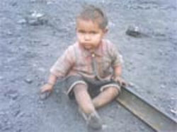
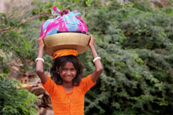

|
Arbeitsgruppe besucht terre des hommes Regionalkonferenz in Karlsruhe
|
terre des hommes Murgtal/Mittelbaden beteiligt sich mit Sophie Uhing, Anne-Rose Reif und Heinz Wolf. Die Arbeitsgruppe stellt ein erfolgreiches Aktionsjahr 2009 vor und gibt einen Ausblick auf das Jahr 2010. Die anwesenden Teilnehmer waren sehr angetan von Sophies (15 Jahre alt) Vortrag über das Kinderrechtsteam „Nojoud“ . Die Kinder und Jugendlichen aus dem Raum Rastatt / Muggensturm unterstützen die Arbeitsgruppe beim Basar am 28. November 2010, beteiligen sich beim Fest und Kundgebung der IG Metall Gaggenau vor dem Gaggenauer Rathaus mit einer „Red Hand-Aktion“ sowie am Tag des Kindes (20. Nov. 2010) in Rastatt. Geplant ist auch ein Kunst-Workshop in Karlsruhe, organisiert von terre des hommes Deutschland.
|
Firma Hettich spendet 300 € für Straßenkinder-Projekte
|
|
|
| Evelyn Hettich übergibt 300 Euro am Heinz Wolf von terre des hommes. |
Die Fa. Hettich GmbH spendet 300 € anlässlich der Eröffnung ihres neuen Firmengebäudes in Kuppenheim-Oberndorf. Parkett-Hettich unterstützt terre des hommes seit mehr als 15 Jahren mit bisher etlichen Tausend Euro. Straßenkinder- und Kinderarbeitsprojekte wurden damit gefördert.
|
Donnerstag, 29. April 2010 |
terre des hommes-Studie zum Tag der Arbeit am 1.Mai:
Hunderttausende Kinder schuften im indischen Bergbau
Erze und Natursteine auch für Europa
|
Beim Abbau von Erzen, Kohle, Uran, Diamanten und Natursteinen in Indien werden Kinder massiv als Arbeitskräfte ausgebeutet. Eine Studie des internationalen Kinderhilfswerkes terre des hommes belegt, dass in vielen indischen Bundesstaaten ohne Rücksicht auf Mensch und Umwelt abgebaut wird. „Die Situation von Kindern in Bergwerksregionen ist dramatisch. Im Umfeld wächst die Kindersterblichkeit, vor allem Kleinkinder leiden unter Mangelernährung. Viele Kinder arbeiten in Bergwerken und Steinbrüchen, statt zur Schule zu gehen, um zum kargen Einkommen ihrer Familien beizutragen“, sagte Barbara Küppers, Kinderarbeitsexpertin von terre des hommes. Gleichzeitig verschlechtern sich die allgemeinen Lebensbedingungen in den Bergwerksregionen rapide. Trinkwasser ist häufig verseucht, da in vielen Minen unkontrolliert hochgiftige Chemikalien verwendet und Abwässer nicht geklärt werden. „Auch das trifft die Gesundheit von Kindern besonders, denn sie reagieren auf Umweltgifte viel empfindlicher als Erwachsene“, so Küppers.
Offiziellen Angaben zufolge arbeiten in Indien etwa 45.000 Kinder in Bergwerken und Steinbrüchen. Doch diese Zahlen berücksichtigen nicht Zehntausende illegale und nicht registrierte Betriebe. Allein im Bundesstaat Karnataka arbeiten mehr als 200.000 Kinder unter 14 Jahren in den Erzminen.
Partnerorganisationen von terre des hommes haben die Studie erarbeitet und fordern von der indischen Regierung die konsequente Durchsetzung des Verbotes ausbeuterischer Kinderarbeit und die Respektierung grundlegender Arbeitsrechte.
In Deutschland setzt sich terre des hommes gegenüber Importeuren von Natursteinen dafür ein, ihre Zulieferer zu zertifizieren, um Steine ohne Kinderarbeit kenntlich zu machen. Kommunen und die öffentliche Hand, aber auch der einzelne Verbraucher sind aufgefordert, Natursteine mit einem seriösen Sozialsiegel kaufen.
terre des hommes fördert zahlreiche Projekte in Indien, die Kinderarbeiter aus Erzminen befreien und Kindertagesstätten und Grundbildung für die Familien von Steinbrucharbeitern anbieten.
Weitere Informationen:
|
Donnerstag, 29. April 2010 |
Bundesrat spricht sich für die Rücknahme des Vorbehaltes zur UN-Kinderrechtskonvention aus.
|
Wird die UN-Kinderrechtskonvention nun auch in Deutschland bald vollständig umgesetzt? Die Bundesrepublik Deutschland hat die UN-Kinderrechtskonvention bisher nur unter dem Vorbehalt ratifiziert, dass sie auf ausländer- und asylrechtliche Sachverhalte keine Anwendung findet. In der Praxis wirkt sich dies besonders auf unbegleitete minderjährige Flüchtlinge zwischen 16 und 18 Jahren aus, die in Deutschland asylverfahrensrechtlich als volljährig gelten und deswegen in Abschiebehaft genommen werden dürfen und ihr Asylverfahren alleine betreiben müssen.
Auf Antrag der Länder Berlin, Rheinland-Pfalz, Brandenburg und Bremen hat der Bundesrat sich am 26. März 2010 nun endlich – nach jahrelanger Blockadepolitik - für die Rücknahme des ausländer- und asylrechtlichen Vorbehaltes zur UN-Kinderrechtskonvention ausgesprochen. Da die Bundesregierung in ihrem Koalitionsvertrag dieses Ziel ebenfalls anstrebt, dürfte dem nun eigentlich nichts mehr im Wege stehen.
Um eine wirkliche Verbesserung für junge Flüchtlinge in unserem Land zu schaffen, muss nun aber auch das deutsche Asyl- und Ausländerrecht, in dem die 16-Jahresgrenze verankert ist, entsprechend geändert werden.
Weitere Informationen:
|
Donnerstag, 15. April 2010 |
20 – 22. April 2010:
Weltklimagipfel der Völker in Bolivien
|
Etwa 10.000 Teilnehmer aus 50 Ländern der Erde werden vom 20. bis zum 22. April im bolivianischen Cochabamba beim »Weltgipfel der Völker zum Klimawandel und den Rechten der Mutter Erde« erwartet. Sie folgen einer Einladung der Regierung des Andenstaates nach dem Scheitern des Weltklimagipfel in Kopenhagen.
Auch terre des hommes-Projektpartner aus der Region beteiligen sich an der Suche nach Lösungsvorschlägen: »Der Klimawandel und die Antworten der indigenen Gemeinden der Andenregion« ist der Titel einer Arbeitsgruppe, die vom 20. bis zum 22. April tagt. In dieser Gruppe soll auch eine gleichnamige Studie der terre des hommes-Projektpartner aus Peru vorgestellt werden.
terre des hommes und der Klimagipfel
Am 19. April berichten und diskutieren indianische Kleinbäuerinnen und –bauern aus dem Norden von Potosí darüber, wie sie den Klimawandel vor Ort erleben und wie sie durch Anwendung traditionellen Wissens die Folgen des Klimawandels abmildern können.
Weitere Informationen:
|
Donnerstag, 08. April 2010 |
terre des hommes-Geschäftsführerin ist Richterin bei attac-Bankentribunal
Bankenkrise demokratisch aufarbeiten und Verantwortliche in die Pflicht nehmen!
|
Vom 9. bis 11. April führt attac Deutschland ein Bankentribunal in Berlin durch. Die Ursachen der Finanzkrise, die Umstände der finanziellen Rettungsmaßnahmen und die mögliche Anbahnung neuer Krisen sollen öffentlichkeitswirksam beleuchtet werden. Danuta Sacher, Geschäftsführerin des internationalen Kinderhilfswerks terre des hommes, hat die Einladung zum Richteramt angenommen, gemeinsam mit dem hessischen Sozialrichter Jürgen Borchert, dem Wirtschaftswissenschaftler Karl Georg Zinn, der Journalistin Ulrike Herrmann und dem Wirtschaftsethiker Friedhelm Hengsbach.
»Das attac-Bankentribunal ist ein wichtiges Forum, um die Bankenkrise aus der Perspektive der normativen Gebote von Grundgesetz und Menschenrechten aufzuarbeiten. Finanzpolitik muss sich an den Werten und Zielen einer demokratisch verfassten Gesellschaft messen lassen, das schließt die entwicklungspolitische Dimension ein«, erläutert Danuta Sacher. So warne ein gerade von der Entwicklungskommission des Europäischen Parlaments veröffentlichter Bericht, dass infolge der Finanz- und Wirtschaftskrise für viele Entwicklungsländer ein ganzes Jahrzehnt des Kampfes gegen Armut und Ausgrenzung hinfällig werden könnte. Die Rohstofferlöse der Entwicklungs- und Schwellenländer brachen um mehr als 20 Prozent ein, allein das Gesamthandelsvolumen Afrikas ging um 17 Prozent zurück. »Aus der Realität unserer Projektarbeit wissen wir, dass sich hinter diesen dürren Zahlen dramatische Schicksale und die verlorene Zukunft von Millionen Kindern verbergen. Wo durchschnittlich 80 Prozent des Einkommens für Nahrung ausgegeben werden müssen, bedeuten jede Preissteigerung und jeder Lohnverlust unmittelbar weniger Essen und weniger Medizin«, so Danuta Sacher. Deutschland sei als einer der stärksten »global players« gefordert, auch bei der Krisenbewältigung seine globale Verantwortung wahrzunehmen. Die ärmsten Länder benötigten verlässliche Investitionen in Bildung, Gesundheit, bäuerliche Landwirtschaft und armutsorientierte Infrastruktur. Dafür bedürfe es gerade in der weltweiten Krise zusätzlicher Mittel. Um diese aufzubringen, sei auch eine Finanztransaktionssteuer ein überfälliges Instrument. »Wir müssen endlich bei der Krisenbewältigung das Verursacherprinzip anwenden und nicht nur einen Schutzschirm für Banken, sondern auch einen Schutzschirm für Kinder aufspannen, der ihnen die Chance auf eine menschenwürdige Zukunft ermöglicht«, so Sacher.
Weitere Informationen:
|
Action for Global Health
Vierter Bericht des europäischen Netzwerkes
»Die Zeit zur Verwirklichung der Millenniumsentwicklungsziele wird knapp«
|
Anlässlich des Weltgesundheitstages am 7. April stellt Action for Global Health den vierten Bericht »Bestandsaufnahme 2010: Die Zeit zur Verwirklichung der Millenniumsentwicklungsziele wird knapp« vor. Das Netzwerk aus 15 europäischen Nichtregierungsorganisationen fordert die Geberländer eindringlich auf, Zusagen einzuhalten und die Anstrengung zu verstärken, um in den verbleibenden fünf Jahren die Millenniumsentwicklungsziele (MDGs) zu erreichen.
»Für die Umsetzung der gesundheitsbezogenen MDGs sind drei Faktoren von entscheidender Bedeutung«, erklärte Dr. Nadja Jacubowski, Referentin für Gesundheit von terre des hommes. »Die Kosten für die Gesundheit dürfen nicht den Ärmsten aufgebürdet werden, die sie zwar am dringendsten benötigen, die aber ohnehin kaum Geld zum Überleben haben. Im ländlichen Raum ist deutlich mehr qualifiziertes Fachpersonal mit ausreichender medizinischer Ausstattung erforderlich. Schließlich müssen die unter mangelnden Gesundheitsdiensten leidenden Gemeinschaften überall mit an den Verhandlungstisch geholt werden. Denn als Vertreter entwicklungspolitischer Hilfswerke wissen wir, dass die effektivsten Maßnahmen diejenigen sind, bei denen die Betroffenen befähigt werden, ihre Probleme selbst zu lösen.«
Der Bericht stellt an zahlreichen Fallbeispielen dar, wie Entwicklungsländer versuchen, die Gesundheitssysteme zu stärken. In Malawi beispielsweise gibt es lediglich 8.000 Krankenschwestern für eine Bevölkerung von 15 Millionen Menschen. Fachpersonal wird vom Privatsektor und vom Ausland abgeworben. »Entweder werden engagierte Krankenschwestern und Ärzte von Institutionen abgeworben, die besser bezahlen und eine bessere Ausstattung haben. Oder sie bleiben und sind schnell frustriert, weil sie die vielen kranken Menschen unter den schlechten Bedingungen nicht zufriedenstellend versorgen können«, so Stephan Kreischer, Gesundheitsreferent von der Welthungerhilfe.
Action for Global Health fordert die europäischen Regierungen daher auf, 0,1 Prozent des Bruttonationaleinkommens für die gesundheitsbezogenen Millenniumsentwicklungsziele zu zahlen. »Denn noch immer stirbt jede Minute eine Frau an Komplikationen während der Schwangerschaft oder Geburt, noch immer sterben jeden Tag etwa 29.000 Kinder vor ihrem fünften Geburtstag, und noch immer sterben jedes Jahr mehr als fünf Millionen Menschen an Tuberkulose, Malaria und HIV«, erklärt Renate Bähr, Geschäftsführerin der Deutschen Stiftung Weltbevölkerung.
Weitere Informationen:
|
|
|
|
 Ansprechpartner Ansprechpartner
|
|
Wolfgang Deppisch
(Projektinfos)
Tel. 07222 / 32927
Heinz Wolf
(Sponsoring, Allgemeines)
Tel. 07225 / 75543
weitere Ansprechpartner
|
|
Erlöse
1992-2012
|
|

Jahr |
Euro |
1992 |
70.000 |
1993 |
75.600 |
1994 |
83.883 |
1995 |
69.617 |
1996 |
51.412 |
1997 |
61.749 |
1998 |
60.333 |
1999 |
68.742 |
2000 |
85.492 |
2001 |
106.375 |
2002 |
78.937 |
2003 |
84.027 |
2004 |
76.662 |
2005 |
149.941 |
2006 |
84.497 |
2007 |
105.958 |
2008 |
104.053 |
2009 |
100.833 |
2010 |
107.254 |
2011 |
103.600 |
| 2012 |
158.250 |
| 2013 |
163.420 |
1977-2013 |
mehr als 2,7 Mio. € |
|
Detailansicht der Erlöszahlen |
|
|


;)
;)
;)
;)
;)
;)